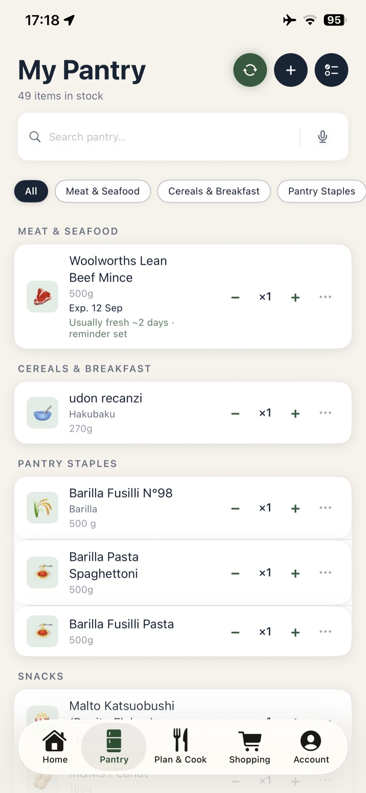
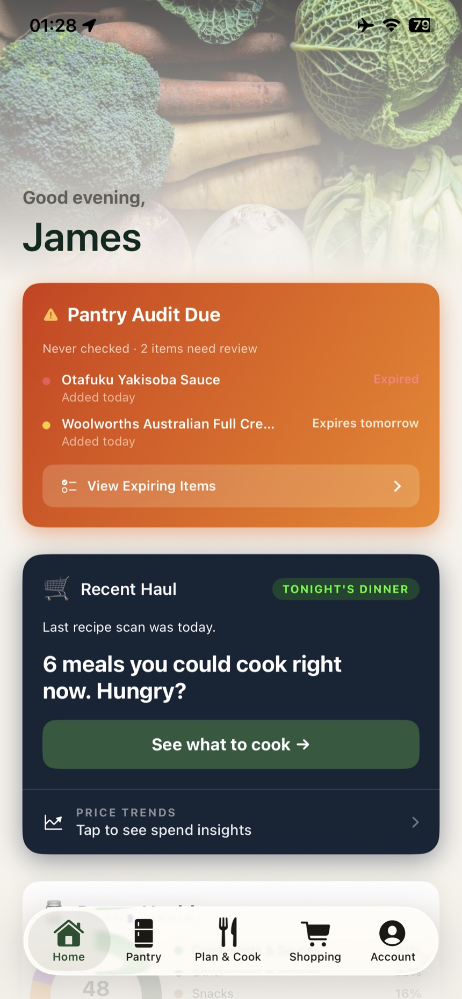
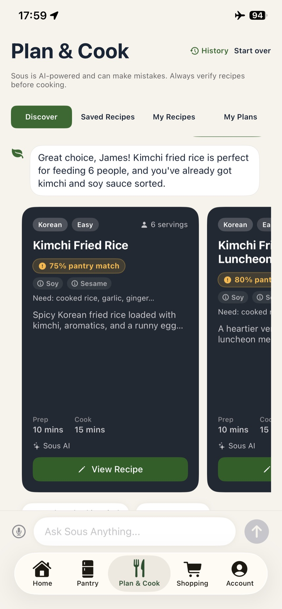
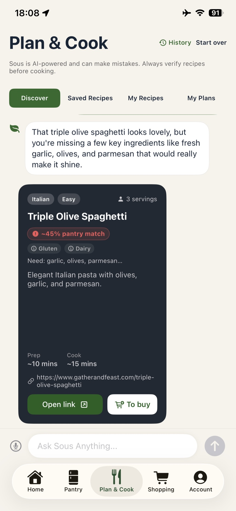
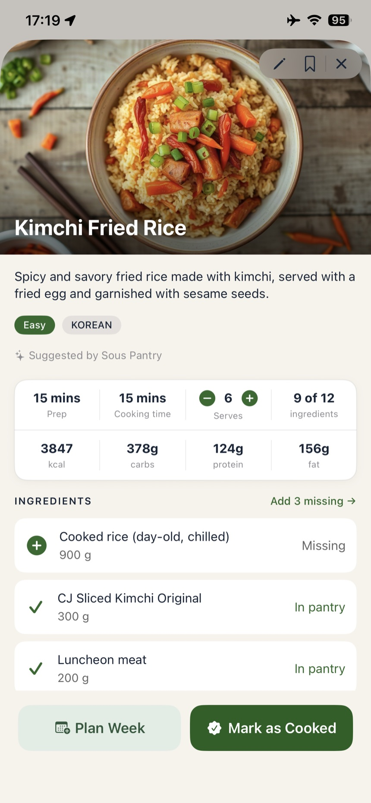

One designer. One AI. One full-stack app.
Shipped Sous Pantry solo on iOS (Swift) using light spec-driven development and rapid prototyping across several AI coding tools. Research to App Store in six months, with zero rework between prototype and shipping. The Android client is in build on the same backend.
Serves
iOS, live
Swift on the App Store. Android (React Native) in build on the same backend
Prep time
4 months
Research, ideation, competitor analysis & learning the tools
Cook time
6 weeks
Focused iOS implementation + 2 weeks QA, launched June 2025
Ready in
6 months
Concept to App Store, solo. Android shipping TBC
The problem
Meal planning apps solve the wrong friction.
Most meal planning apps either require tedious manual data entry, suggest meals with ingredients you don't have, or don't connect to your actual shopping workflow. Users want to reduce food waste and simplify meal decisions, but existing solutions create more friction, not less.
Manual entry, high abandonment
Tracking a pantry by hand is tedious enough that most people give up within a week.
Suggestions that ignore reality
Meal ideas built from a generic recipe database, not what's actually in your kitchen.
Disconnected from shopping
Meal planning and grocery shopping live in separate apps, so nothing carries over.
Research & discovery · Jan to April 2025
Four months before a line of production code.
User research. Interviewed potential users on their actual pain points:
- "I buy groceries then forget what I have. Things go bad." (food waste)
- "Deciding what to cook takes 20+ minutes daily." (meal fatigue)
- "I have to manually make lists or remember what I need." (shopping friction)
Competitor analysis. Studied Yummly, BigOven, Mealie, and AnyList:
- Most require manual pantry entry, the exact friction users complained about
- AI features were superficial, bolted on rather than core to the experience
- None connected pantry → meals → shopping into one seamless loop
The rest of discovery went into learning what this build would require: modern mobile development in Swift and React Native, LLM integration with the Anthropic API, and rapid AI-assisted prototyping workflows with Claude Code.
Core hypothesis · validated before writing a single screen
Photo-based pantry scanning + AI reasoning removes the #1 friction point, manual entry. Get this right, and the rest follows.
The method
Light spec-driven development,
not vibe-coding from scratch.
Rather than jumping straight into code, I ran a structured seven-phase process before implementation began, treating architecture decisions with the same rigor as UX decisions.
-
Product clarity
Vision, pain points, and a single success metric: plan a week of meals in under 15 minutes. Key assumption to validate: photo-based scanning removes enough friction to make the whole idea work.
-
Architecture-first design
Mapped the data model (users → pantry inventory → meals → shopping lists), put a single LLM reasoning layer behind inventory matching, meal suggestions and shopping automation, and settled on one backend API designed to serve both iOS and a later Android client.
-
Research & validation
Settled the question the whole product rests on: should the AI read the photo directly, or should the photo first become a structured list of items that everything else works from? I chose the second. Extracting the items first means the user can see and correct what was recognised, and every later feature (meals, shopping lists) reads from that same clean inventory instead of re-interpreting an image. I tested both with real API calls before committing.
-
Capability audit
Identified the specialised skills the build needed: Swift for uncompromising native iOS performance, React Native for Android with shared business logic, Anthropic API prompt design, native camera APIs, and a Node.js backend.
-
Options & recommendation
Weighed three options: a web-only MVP, one platform first, or both in parallel. Solo, parallel was never realistic, so the real question was which platform. I checked mobile market share in the two markets I was building for. In early 2025 iOS held roughly 63.7% in Australia against Android's 36.3%, and 57.5% to 59% across North America. iOS first put the app in front of the larger share of users in both markets from day one, with Android to follow on the same backend once the core product was validated. (StatCounter, early 2025: Australia, North America.)
-
Executable roadmap
Phase 1: iOS MVP, six weeks of implementation plus two weeks of QA covering pantry scanning, AI meal suggestions, shopping lists and preferences. Phase 2: Android in React Native with native patterns, not a direct port, reusing the backend and business logic. That phase is still running.
-
Ship with quality
Interactive prototypes built with Claude Code and run in the iOS Simulator validated UX before production code. Iterated with real early testers, then worked across several AI coding environments (Cursor, Claude Code, OpenClaw and my own Hermes Agent), matching the tool to the task across design, components, API integration and testing.
Technical architecture
No server to babysit, and no keys in the app.
iOS · Swift + Xcode
Native SwiftUI for photo capture and pantry management, with SwiftData for on-device persistence and an offline-first experience, syncing with Supabase when back online. Responsive across phone and tablet.
Android · React Native (in build)
In build. Shared component architecture with iOS design patterns, native modules for the camera and performance-critical paths, and the same Worker and Supabase contracts, designed as a re-platform against what is already deployed rather than a direct port.
Data
PostgreSQL on Supabase for user data, preferences and meal history, paired with on-device SwiftData for offline access, syncing when connectivity returns.
AI · proxied at the edge
Claude is the reasoning engine today, with purpose-built prompts for inventory extraction, meal reasoning and shopping lists. Model calls go through a Cloudflare Worker that holds the API key as a wrangler secret and accepts only requests carrying a bearer token, so no model credential ships in the app. Each prompt returns a strict JSON contract the UI renders directly.
Routing every model call through one place is what keeps swapping or comparing models a contained change. I'm currently evaluating ILMU, a Malaysian-built LLM, for non-English input, testing how pantry items and recipes hold up in other languages and regional dialects, where product names and cooking terms rarely translate literally.
Under the hood
Four decisions, in the shipped code.
These are unedited excerpts from the repositories behind the app on the App Store. In each one, the design decision and the engineering decision were the same decision.
01 · The design system is code, not a swatch sheet
Sous Pantry/Theme.swiftThe core palette and the shared card treatment live in one file, and the app leans on it hard: 1,168 AppTheme references across the iOS codebase. That's a design system enforced by the compiler rather than one that only exists in Figma, so changing a brand colour is a one-line diff, not a hunt. Auditing it for this write-up also surfaced 278 one-off colours that had drifted into feature views. That's the honest state of most design systems, and the first thing I'd reconcile.
02 · Product decisions, encoded in the prompt
backend/src/routes/shopping.jsThree product decisions live in this string, not in a spec doc. "Prioritise items that unlock the most meals" is a ranking rule: the list is sorted by cooking potential, not alphabetically. priority gives the UI something to sort and badge. reason forces the model to justify every row, so the interface can always tell you why an item is there. Designing the prompt was designing the interaction.
03 · The cold-start problem, solved separately
backend/src/routes/shopping.jsA recommendation engine with nothing to recommend from is the classic empty-state failure. Rather than a blank list or generic filler, an empty pantry routes to a different endpoint entirely and returns a real starter pack. The locale in that prompt is a setting, not a limit. The same structure serves any kitchen, which is exactly what the ILMU language testing is for. A UX decision that had to be built as an API decision.
04 · Reading a real Australian supermarket receipt
backend/src/routes/receipt.jsThese rules come from reading real receipts. Supermarket dockets print ORG FF MILK 2L, not "Organic Full Fat Milk", so the parser expands them. They print loyalty points and bag fees that aren't groceries, so those are excluded by name. Photographed receipts arrive with OCR damage, so character repair is part of the contract. There are two ingestion paths: a photographed receipt, and an eReceipt web sync that skips OCR entirely when the text is already digital. The market sits in the prompt rather than in the parser, so the same rules re-tune for another country's receipts without touching the pipeline.
The product
Pantry → meals → shopping, in your pocket.
Screenshots from the shipped iOS app, running against a real pantry. Not mockups. Each step of the loop is also a decision about how much to tell the user.

A pantry built from receipts, not typing
Forty-nine items, none of them typed in. The list was scanned straight from the grocery receipt and expanded into full product names. Each item shows its printed expiry date where it has one, alongside what the app has learned about how long that kind of item usually keeps: "Usually fresh ~2 days · reminder set". The printed date is what it goes by, the learned window fills the gap for items that carry no date, and the reminder is set either way.

Shows what is expiring, and what to cook with it
The home screen opens with what is about to be wasted. "Expired" is red, "Expires tomorrow" is amber, and each has a matching dot, so you see how urgent an item is before you read it. Directly under that sits "6 meals you could cook right now." A warning on its own only makes people feel bad. Putting a meal next to it gives them something to do tonight. Price trends sits below, because waste and spend are the same problem.

Guardrails on every AI suggestion
Every suggestion carries a pantry-match percentage and its allergens before you open it. The disclaimer sits at the top of the screen, not buried in settings: "Sous is AI-powered and can make mistakes. Always verify recipes before cooking." Those are the guardrails I built around the AI. A 75% match shows in amber because it is a good option, not a certain one.

It reads recipes from anywhere, not just its own
This recipe did not come from Sous. It came from an external cooking site, and the app read the page, scored it against the pantry at ~45%, and listed what was missing: garlic, olives, parmesan. "To buy" sends those straight to the shopping list, "Open link" goes back to the original page. The tildes are deliberate. When the numbers are read off someone else's page rather than generated here, the estimate is approximate and the interface says so: ~10 mins, not 10.

From recipe to basket in one tap
"9 of 12 ingredients", each row marked In pantry or Missing, with one "Add 3 missing →" action. Changing the serving count rescales every quantity. That closes the loop. The pantry becomes a recipe, and what is missing becomes the shopping list.
Key features
Four features, one connected loop.
Pantry scanning
Photograph the shelf and an LLM extracts the items, with manual entry as a fallback. Which model does that is not fixed. Extraction runs through the same server-side wrapper as every other call, so swapping or comparing models never touches the app. Items are tracked with quantity and expiry, syncing instantly across devices.
AI-powered meal suggestions
The model reads dietary preferences and current inventory, then suggests 3 meals you can cook right now and lists exactly which pantry items each one uses.
Shopping list automation
Select meals for the week and the app works out exactly what's missing, organised by category: produce, proteins, pantry staples.
One system, many clients
Two services sit behind the app and nothing else: a Worker for model calls and imagery, and Supabase for data. A second client builds against the same two contracts rather than reimplementing them, and both clients share the same design tokens.
Development process
Built across several AI coding tools.
Interactive prototypes built with Claude Code and run in the iOS Simulator through Xcode validated UX decisions before a line of production code was written. From there the work moved between tools rather than living in one: Claude Code stayed on component and API integration loops and mid-build diagnosis, Cursor for fast in-editor iteration, OpenClaw, and Hermes Agent, one I built myself, for the repetitive scaffolding. Using several on real work is how you learn what each is actually good at. The iOS prototype went to production in six weeks with no rework; the Android client is being built on the backend and business logic already shipped.
Jan – Apr 2025 · 4 months
Research & planning
User research, competitor analysis, ideation, and learning the tools this build would require.
Apr – mid-May 2025 · 6 weeks
iOS implementation
Focused development against the roadmap from the spec-driven planning phase.
Mid-May – mid-June 2025 · 2 weeks
iOS testing & launch
QA, refinement, and launch. Sous Pantry went live on the App Store in June 2025.
From end of May 2025 · in progress
Android build · ongoing
Started alongside iOS testing and still in build, reusing the backend and business logic already shipped. Ship date TBC.
Results & impact
Production quality, zero rework.
The closed beta ran across 15 real households, deliberately split between paid-subscription and free-tier accounts so the paywall and its limits got exercised alongside the core loop. It ran long enough that the same themes kept recurring rather than new ones appearing. Three came up again and again: photo-based pantry scanning feels close to magic next to manual entry in competitor apps, the meal suggestions read as genuinely useful rather than generic, and the shopping lists match what's actually needed, which cuts waste.
- Production-ready AI integration: Anthropic API with deliberate, transparent UX
- Shipped to the App Store from a solo contributor: design, client, backend and AI
- Zero external service dependencies: every infrastructure layer owned end-to-end
- Backend architected so a second client reuses the same API, and the Android build is proving it now
Why it matters
The same problems, from the kitchen side.
Sous Pantry is built for any kitchen. Pantry, meals and shopping work the same wherever you cook, and only a thin local layer changes per market: receipt formats, product naming, and language. Australia was the first market to be tuned, North America was scoped alongside it, and other languages are in testing now. Retailers see the basket. This app starts one step earlier, in the cupboard, which turns out to be the same set of problems approached from the other end.
List building is cart building
Generating a weekly shopping list from what a household already has is the front half of an online grocery order. The ranking rule, prioritise what unlocks the most meals, is a basket-composition problem, not a search problem.
Onboarding an empty basket
A new customer with no history is the hardest recommendation case in retail. Here it's an empty pantry, and it routes to a purpose-built starter pack rather than a blank screen or generic filler. It's a cold-start pattern that transfers directly.
Waste is a design outcome
Suggesting meals against what's already in stock, and tracking expiry, means buying less of what would spoil. Reducing household food waste is a sustainability outcome reached through interface decisions, not messaging.
AI that has to explain itself
Every recommendation carries a reason field, enforced at the API contract level, so the interface can always say why an item is on the list. For grocery AI, where trust is the constraint, explainability is a build requirement rather than a nice-to-have.
What worked well
Five decisions that paid off.
-
Architecture-first
One week on the database schema and system design prevented rework across eight-plus weeks of implementation.
-
Photo-based input
The single biggest UX lever. Manual entry ran 3–5 minutes per session. A camera snap or photo scan brings it down to 10–15 seconds per item.
-
Transparent AI reasoning
Users trust a suggestion when they can see why. "You have chicken, rice, and soy sauce → fried rice" beats an unexplained recommendation.
-
Designed for a second client from day one
Android reuses the API, business logic and database schema, so the second build starts from a proven contract instead of a rewrite.
-
Prototype in the Simulator first
Prototypes built with Claude Code and run in the iOS Simulator caught UX issues before implementation, while they were still cheap to change.
What I'd do differently
Four things for next time.
-
Assistive support, designed in, not retrofitted
Voice input shipped as a convenience feature, but the assistive layer behind it (VoiceOver labels, Dynamic Type, contrast auditing) was left until after launch. On a product whose core interaction is a camera and a long list, that belongs in the planning phase, not the backlog.
-
Validate receipt import sooner
Receipt OCR and parsing was deferred as a "future feature" and turned out to be far harder, and far more central, than expected. It's built and running now, but it should have been proven during the iOS build, because it's the fastest path into a populated pantry and the whole product is weaker without it.
-
Longitudinal testing, not just sessions
Discovery interviews and a 15-household beta validated the core loop, but the pantry friction that surfaced after launch was the kind short sessions miss: a pantry that's been accumulating for weeks behaves nothing like a freshly seeded one. Next time I'd run a smaller group over a longer stretch rather than more people once.
-
A clearer offline-first strategy
Local-first sync works, but the approach evolved mid-build, and deciding upfront would have simplified things.
What I took away
What this taught me as a design technologist.
Spec-driven development is still relevant
Fast-shipping teams still need architecture thinking. It isn't "spec vs. vibe-code". It's a smart spec paired with rapid iteration.
AI integration needs design thinking
LLMs are powerful, but thoughtful UX is what turns that power into delight. Transparent reasoning plus user control drives adoption.
Multi-platform is one system, not three
Clients and backend aren't separate projects. They're one system with different views onto it. Architecture thinking from day one prevents rework.
Shipping removes assumptions
Feedback on a shipped product beats research on wireframes every time. I learned more in the first weeks on the App Store than in the months of planning before it.
Build it as if a team will inherit it
A design system, one shared backend, reusable business logic. I was the only person on this, but I built the artefacts a team would need. That is what let a second client start from a proven contract instead of a rewrite, and it is the part that transfers to any team.
Prototype before you commit
A prototype running on a real device answers questions a mockup cannot. Building them with Claude Code made them cheap enough to throw away, so decisions got made on something I could use rather than something I could only look at.
Rapid iteration and production quality are not opposites
With the right tooling and a spec worth following, moving quickly did not cost me quality. Zero rework between prototype and shipped code is the evidence.
What's next
Where Sous Pantry goes from here.
Code like an engineer, think like a designer, use AI to amplify both.
How I work